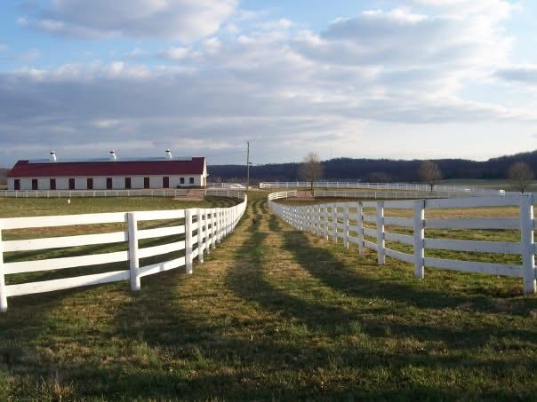
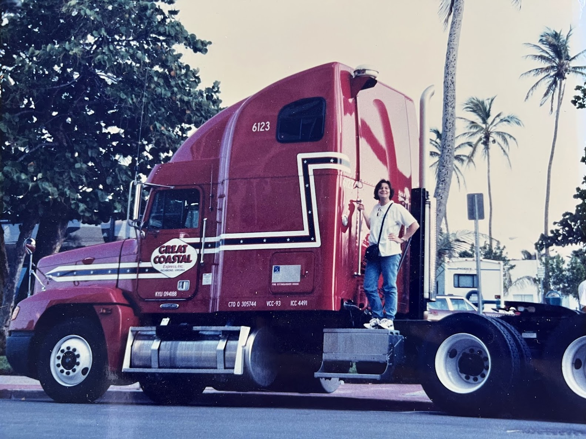
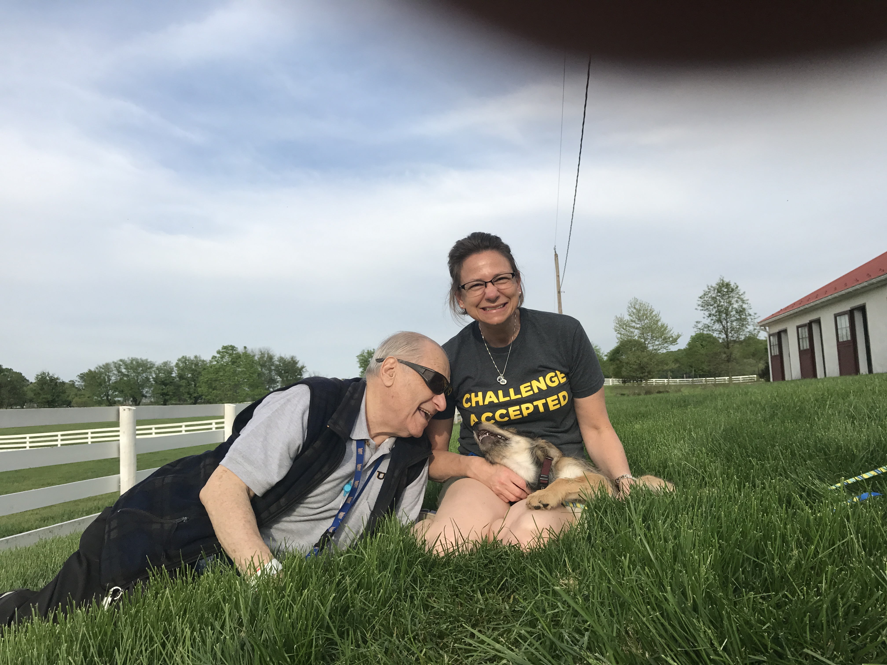
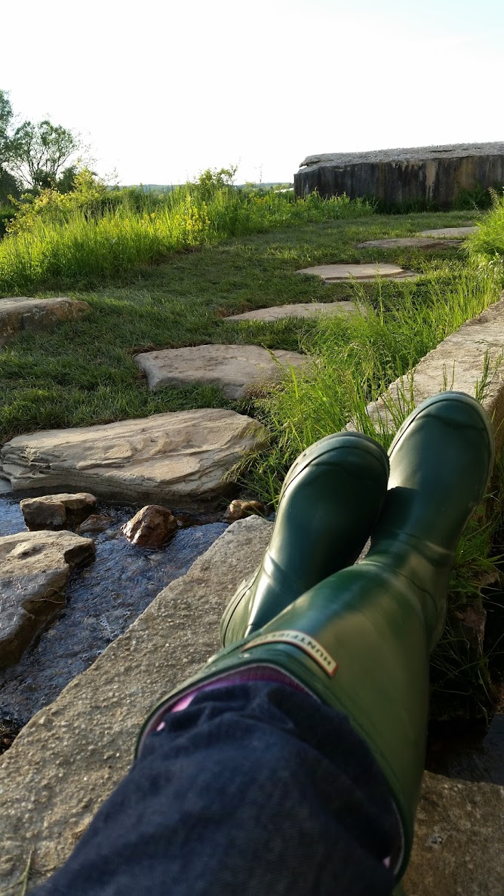
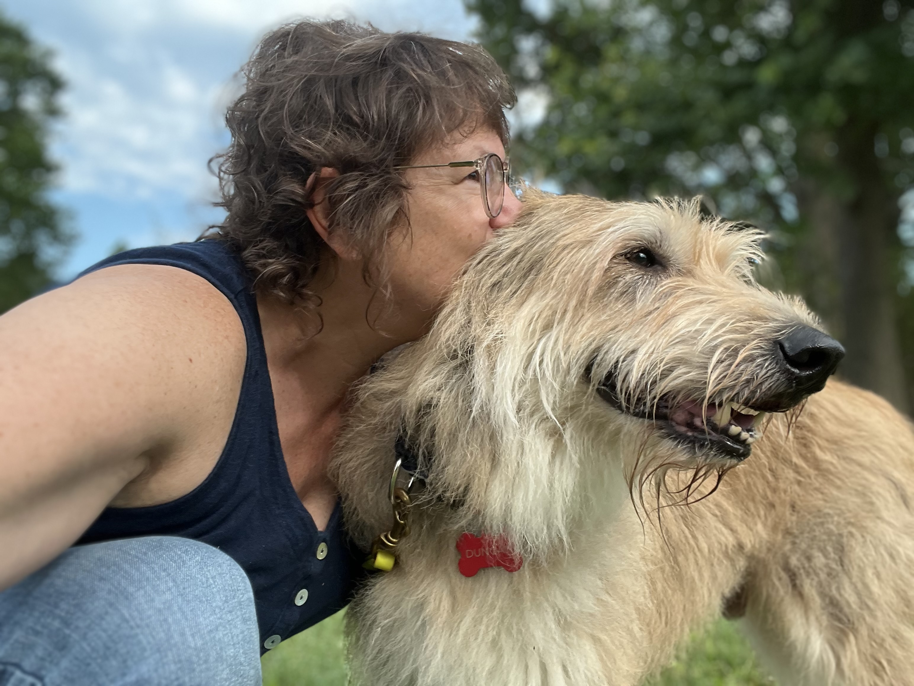

Horses / Stewardship
The Machine Shop at Sagamore
Love, responsibility, and the complicated world surrounding thoroughbred horses.
Read on SubstackWriter / Worker · Signal & Shift
I follow curiosity, notice patterns, and write down the stories. I am building a living archive of a life that keeps getting better.
Read the storiesI have driven a big truck across the country. Built a life around horses. Found my way through loss, sobriety, work, and starting again.
I investigate my curiosity. Keep what works. Leave what does not.
Right now, I am paying attention to my joy span.


Horses / Stewardship
Love, responsibility, and the complicated world surrounding thoroughbred horses.
Read on Substack
Dogs / Partnership
Loss, partnership, and finding the next relationship that changes everything.
Read on Substack
Memory / Origin
Photography, memory, and the impossible dreams that became a life.
Read on SubstackSignal & Shift
Life works the same way. This is about noticing what is actually happening, and learning how to shift.
A living archive
Dogs, horses, big trucks, curious adventures, and the systems that connect them.
Read and subscribe on Substack